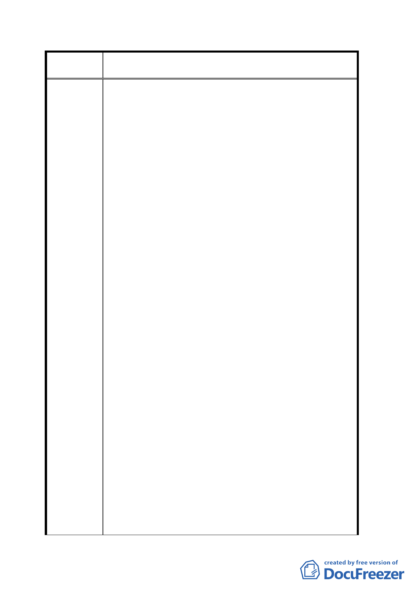

案
名
變更臺北市文山區萬隆段二小段瀝青拌合場用地及住宅區
（專案國宅用地）為學校用地計畫案
景興國中辦理公聽會，本地區民眾經緊急通知開會才
知有此提案計畫會議，是日民眾提出多方疑問及反對
意見：
1. 本案未見提出計畫評估報告書、地方意見調查、地區溝
通說明會，為何就進入「公聽會」程序？
2. 依相關法規規定公聽會通知送達時間，應於舉辦日期前
十五日以上，本次通知早已不符辦理程序，不應成立。
3. 以上兩項程序均未依正常手續辦理，為何本次會議即逕
行提出細部設計方案藍圖，並預計 96 年「完工」之說？
4. 既然為特殊管教之學校管理，為何設置於人口稠密社
區，且用地面積狹小之地方，令居民多所疑問。
5. 居民要求教育局將本次所有反對意見，據實彙整為確實
之會議記錄，呈報市長，教育局允諾會反映地方意見。
二、91 年 11 月 23 日地方發動，反對文心中學設校於文山
區瀝青拌合場用地說明會，邀請教育局及籌備處張主
任、多位市議員、立委與會，強調：
1. 地方居民非反對學校之設立，而是未見提報任何評估報
告、地方意見調查、說明溝通，而且設置地點是否適切，
令地方居民相當質疑！
2. 陽明山惇敘高工也已廢校，地點、用地面積、使用地目
等均較為理想，請相關單位應認真評估勿敷衍。
3. 地方民眾理性表達反對意見，並呈交連署反對簽名冊，
應由相關單位呈報市長審慎評估。
三、92 年 3 月中旬由教育舉辦邀請帶領社區代表（大部分
為里長、里幹事）前往高雄瑞平中學參觀，社區代表
提出疑問，希望教育局具體回應：
1. 瑞平中學位區市區外，空間寬闊面積較大，與最相近之
社區大廈仍有大段距離，校區位置及相關條件顯然不
同，且文山社區民眾非反對設校，為何模糊焦點？且如
何相提並論？
2. 該日參觀均不見學校代表，無從瞭解其教育方式，社區
代表初步認為：此等具特殊教育意義之學校，既然教育
局言明「保證」學生一律採行隔絕方式管教，為何非設
於人口稠密之文山社區中？
3. 以上問題應予釐清對社區提出說明，並正視社區民眾反
對意見！
一一